EDA#
!pip install plotly
Requirement already satisfied: plotly in c:\users\erodr\miniconda3\envs\dl_tesis\lib\site-packages (6.0.1)
Requirement already satisfied: narwhals>=1.15.1 in c:\users\erodr\miniconda3\envs\dl_tesis\lib\site-packages (from plotly) (1.31.0)
Requirement already satisfied: packaging in c:\users\erodr\miniconda3\envs\dl_tesis\lib\site-packages (from plotly) (23.1)
WARNING: Ignoring invalid distribution -orch (c:\users\erodr\miniconda3\envs\dl_tesis\lib\site-packages)
WARNING: Ignoring invalid distribution -orch (c:\users\erodr\miniconda3\envs\dl_tesis\lib\site-packages)
WARNING: Ignoring invalid distribution -orch (c:\users\erodr\miniconda3\envs\dl_tesis\lib\site-packages)
import warnings
warnings.filterwarnings("ignore", category=FutureWarning)
import numpy as np
import pandas as pd
import matplotlib.pyplot as plt
import seaborn as sns
from sklearn.decomposition import PCA
import plotly.express as px
ruta = r'C:\Maestria\Tercer_semestre\Machine_learning\mitbih_train.csv'
df = pd.read_csv(ruta, header=None)
df.rename(columns={187:"label"}, inplace=True) #renombrar la columna de label
print("Dimensiones del dataset:", df.shape)
X = df.iloc[:, :-1]
y = df.iloc[:, -1]
Dimensiones del dataset: (109446, 188)
El dataset en analisis consta de 188 variables y en su conjunto de entrenamiento de 109446 datos. El conjunt de Test se tiene en un dataset diferente y no sera objeto de estudio en este EDA para que sea unicamente usado despues de entrenar el modelo.
ECG Heartbeat Categorization Dataset#
Este conjunto de datos se compone de dos colecciones de señales de latidos cardíacos derivadas de dos conjuntos de datos famosos en la clasificación de latidos cardíacos, el MIT-BIH Arrhythmia Dataset y The PTB Diagnostic ECG Database. El número de muestras en ambas colecciones es lo suficientemente grande como para entrenar incluso una red neuronal profunda. Las señales corresponden a formas de electrocardiogramas (ECG) de latidos cardíacos para el caso normal y los casos afectados por diferentes arritmias e infarto de miocardio. Estas señales se preprocesan y segmentan, correspondiendo cada segmento a un latido cardíaco.

Las labels son: [‘N’: 0, ‘S’: 1, ‘V’: 2, ‘F’: 3, ‘Q’: 4]
N: Latidos normales y bloqueos
S: Latidos supraventriculares anormales
V: Latidos ventriculares anormales
F: Latidos fusionados
Q: Latidos artificiales o no clasificados
Nota: Para entender los datos podemos ver el siguiente paper: https://www.kaggle.com/datasets/shayanfazeli/heartbeat
Resumen estadistico#
El dataset consta de 188 columnunas y en la tabla continua podemos ver las metricas estadisticas mas representativas para cada una de esas variables
df.describe()
| 0 | 1 | 2 | 3 | 4 | 5 | 6 | 7 | 8 | 9 | ... | 178 | 179 | 180 | 181 | 182 | 183 | 184 | 185 | 186 | label | |
|---|---|---|---|---|---|---|---|---|---|---|---|---|---|---|---|---|---|---|---|---|---|
| count | 109446.000000 | 109446.000000 | 109446.000000 | 109446.000000 | 109446.000000 | 109446.000000 | 109446.000000 | 109446.000000 | 109446.000000 | 109446.000000 | ... | 109446.000000 | 109446.000000 | 109446.000000 | 109446.000000 | 109446.000000 | 109446.000000 | 109446.000000 | 109446.000000 | 109446.000000 | 109446.000000 |
| mean | 0.891170 | 0.758910 | 0.424502 | 0.219602 | 0.201237 | 0.210297 | 0.205606 | 0.201615 | 0.198480 | 0.196610 | ... | 0.004937 | 0.004568 | 0.004236 | 0.003914 | 0.003673 | 0.003469 | 0.003210 | 0.002956 | 0.002835 | 0.473439 |
| std | 0.239656 | 0.221189 | 0.227562 | 0.207249 | 0.177191 | 0.171965 | 0.178374 | 0.177021 | 0.171469 | 0.168028 | ... | 0.043951 | 0.042110 | 0.040469 | 0.038801 | 0.037466 | 0.036553 | 0.035014 | 0.033414 | 0.032619 | 1.143232 |
| min | 0.000000 | 0.000000 | 0.000000 | 0.000000 | 0.000000 | 0.000000 | 0.000000 | 0.000000 | 0.000000 | 0.000000 | ... | 0.000000 | 0.000000 | 0.000000 | 0.000000 | 0.000000 | 0.000000 | 0.000000 | 0.000000 | 0.000000 | 0.000000 |
| 25% | 0.922000 | 0.683000 | 0.251000 | 0.048900 | 0.082400 | 0.088300 | 0.073200 | 0.066100 | 0.064900 | 0.068600 | ... | 0.000000 | 0.000000 | 0.000000 | 0.000000 | 0.000000 | 0.000000 | 0.000000 | 0.000000 | 0.000000 | 0.000000 |
| 50% | 0.991000 | 0.827000 | 0.430000 | 0.166000 | 0.148000 | 0.159000 | 0.145000 | 0.144000 | 0.150000 | 0.149000 | ... | 0.000000 | 0.000000 | 0.000000 | 0.000000 | 0.000000 | 0.000000 | 0.000000 | 0.000000 | 0.000000 | 0.000000 |
| 75% | 1.000000 | 0.911000 | 0.580000 | 0.343000 | 0.259000 | 0.287000 | 0.298000 | 0.295000 | 0.291000 | 0.283000 | ... | 0.000000 | 0.000000 | 0.000000 | 0.000000 | 0.000000 | 0.000000 | 0.000000 | 0.000000 | 0.000000 | 0.000000 |
| max | 1.000000 | 1.000000 | 1.000000 | 1.000000 | 1.000000 | 1.000000 | 1.000000 | 1.000000 | 1.000000 | 1.000000 | ... | 1.000000 | 1.000000 | 1.000000 | 1.000000 | 1.000000 | 1.000000 | 1.000000 | 1.000000 | 1.000000 | 4.000000 |
8 rows × 188 columns
Revisión de valores nulos y valores atípicos#
En el dataset en estudio no se cuenta con valores nulos
df.isnull().sum(axis=0).describe() # Ver si existen valores nulos
count 188.0
mean 0.0
std 0.0
min 0.0
25% 0.0
50% 0.0
75% 0.0
max 0.0
dtype: float64
print("\nValores máximos y mínimos de las señales:")
print(f"Máximo: {X.values.max()}, Mínimo: {X.values.min()}")
Valores máximos y mínimos de las señales:
Máximo: 1.0, Mínimo: 0.0
Balance de clases y KDE de Amplitudes por Clase#
df["label"].value_counts()
label
0.0 90589
4.0 8039
2.0 7236
1.0 2779
3.0 803
Name: count, dtype: int64
# Histograma de todos los valores de señales (con flatten)
plt.figure(figsize=(10, 4))
plt.hist(X.values.flatten(), bins=100, color='skyblue')
plt.title("Distribución de los valores de las señales")
plt.xlabel("Amplitud")
plt.ylabel("Frecuencia")
plt.show()
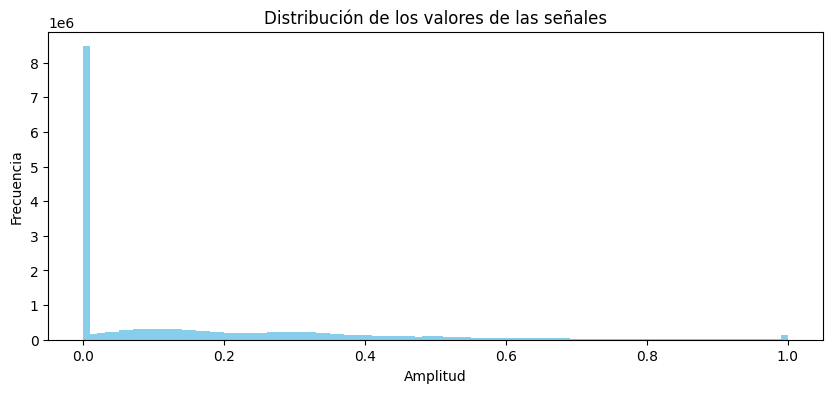
clases = sorted(y.unique())
plt.figure(figsize=(10, 6))
for clase in clases:
sns.kdeplot(X[y == clase].values.flatten(), label=f'Clase {int(clase)}', fill=True, alpha=0.4)
plt.title("Distribución de densidad (KDE) de amplitudes por clase")
plt.xlabel("Amplitud")
plt.ylabel("Densidad")
plt.legend()
plt.show()
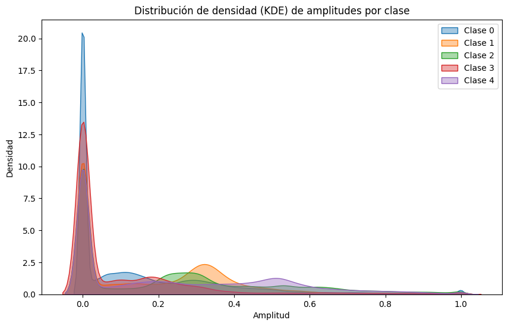
Evidentemente se puede asegurar que Hay un fuerte desbalance de clases, la clase 0.0 domina completamente el dataset y la clase 3.0 tiene menos del 1% de las muestras lo cual nos obligara a usar tecnicas de balanceo para un correcto entrenamiento del modelo.
KDE significa Kernel Density Estimation (Estimación de Densidad por Núcleo). Es una técnica no paramétrica que estima la función de densidad de probabilidad de una variable aleatoria, a partir de una muestra. Me permite sugerir aplicar técnicas de reducción de dimensionalidad (PCA, t-SNE) para ver si las clases son separables en base a amplitudes y usar esta información para diseñar estrategias de preprocesamiento o extracción de características.
Visualización de ejemplos por clase#
clases = y.unique()
plt.figure(figsize=(15, 8))
for i, clase in enumerate(sorted(clases)):
idx = y[y == clase].sample(1).index[0]
señal = X.iloc[idx]
plt.subplot(2, 3, i + 1)
plt.plot(señal.values)
plt.title(f"Ejemplo de clase {int(clase)}")
plt.xlabel("Tiempo")
plt.ylabel("Amplitud")
plt.tight_layout()
plt.show()
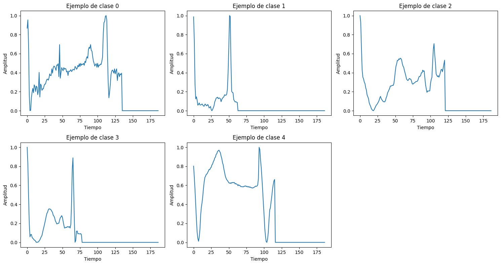
Estadísticas descriptivas#
print("\nEstadísticas de las señales:")
print(X.describe().T[['mean', 'std', 'min', 'max']])
Estadísticas de las señales:
mean std min max
0 0.891170 0.239656 0.0 1.0
1 0.758910 0.221189 0.0 1.0
2 0.424502 0.227562 0.0 1.0
3 0.219602 0.207249 0.0 1.0
4 0.201237 0.177191 0.0 1.0
.. ... ... ... ...
182 0.003673 0.037466 0.0 1.0
183 0.003469 0.036553 0.0 1.0
184 0.003210 0.035014 0.0 1.0
185 0.002956 0.033414 0.0 1.0
186 0.002835 0.032619 0.0 1.0
[187 rows x 4 columns]
Obtenemos el resumen estadístico por variable. Los valores se encuentra contenidos entre 0 y 1. De los datos podemos inferir que la actividad más importante ocurre al principio o en el medio de la señal. Al final de muchas señales parece ser plano o sin mucha información, esto también lo puedes confirmar con la energía o KDE, revisado anteriormente.
Señales Extremas Energía máxima y mínima#
Evaluación de diversidad en las señales Las señales más energéticas pueden estar asociadas a latidos más violentos o anormales. Las señales con baja energía pueden representar latidos débiles o inusuales. Puede ayudarte a entender el rango de comportamiento cardíaco en el dataset.
energia = X.apply(lambda x: np.sum(x**2), axis=1)
idx_max = energia.idxmax()
idx_min = energia.idxmin()
plt.figure(figsize=(12, 4))
plt.subplot(1, 2, 1)
plt.plot(X.iloc[idx_max])
plt.title(f"Señal con mayor energía (Clase {int(y[idx_max])})")
plt.subplot(1, 2, 2)
plt.plot(X.iloc[idx_min])
plt.title(f"Señal con menor energía (Clase {int(y[idx_min])})")
plt.tight_layout()
plt.show()
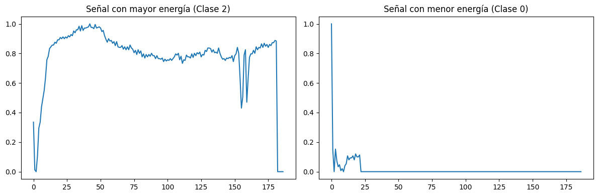
CORRELACIONES LINEALES ENTRE VARIABLES#
Procedemos inicialmente a realizar una validacion de correlaciones lineales entre las variables de nuestro dataset.
correlations = df.corr()
plt.figure(figsize=(16, 12))
sns.heatmap(correlations, cmap="coolwarm", linewidths=0.5)
plt.title("Matriz de Correlación entre Señales de ECG")
plt.show()
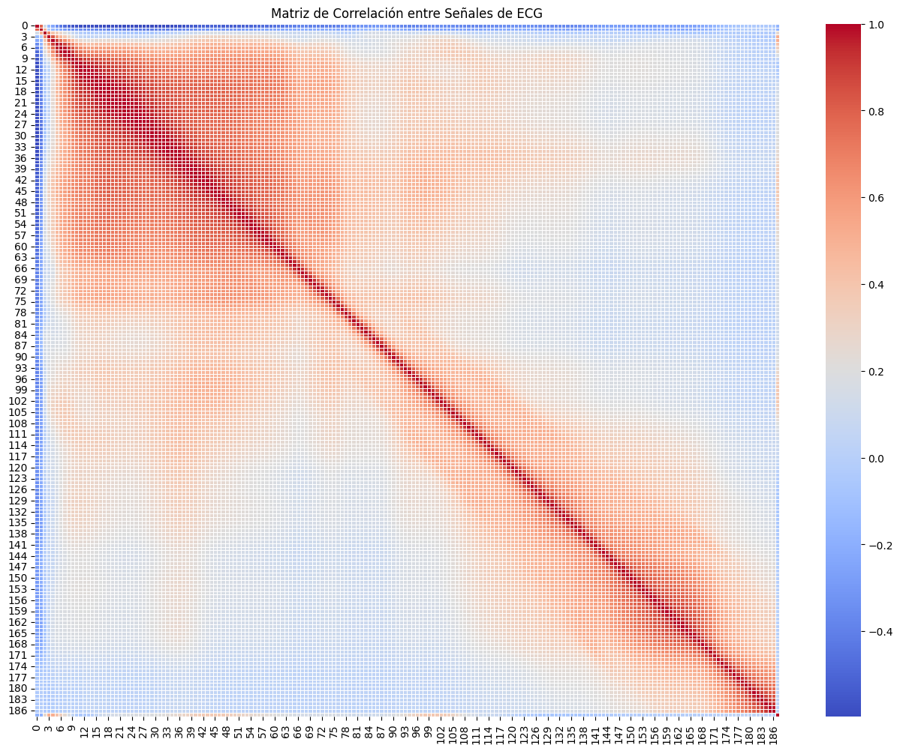
correlations["label"].sort_values(ascending=False).head(15)
label 1.000000
3 0.509593
4 0.509318
5 0.409581
100 0.378121
99 0.375792
101 0.374241
102 0.368043
98 0.366139
44 0.365019
45 0.364287
43 0.363034
46 0.359995
42 0.358139
103 0.352987
Name: label, dtype: float64
Esto es una forma de feature selection básica, para identificar qué variables tienen mayor relación con la clase. Se puede infereir viendo el mapa de calor que hay segmentos específicos de la señal ECG donde ocurren características distintivas de cada clase. Ahora procederemos con un nuevo Dataset solo con estas columnas top.
top_features = [3, 4, 5, 100, 99, 101, 102, 98, 44, 45, 43, 46, 42, 103, 'label']
df_top = df[top_features].copy()
df_top.columns = [str(col) for col in df_top.columns]
corr_matrix = df_top.corr()
plt.figure(figsize=(12, 8))
sns.heatmap(corr_matrix, annot=True, cmap="coolwarm", fmt=".2f", square=True)
plt.title("Matriz de correlación entre las 15 variables más relacionadas con la clase")
plt.show()
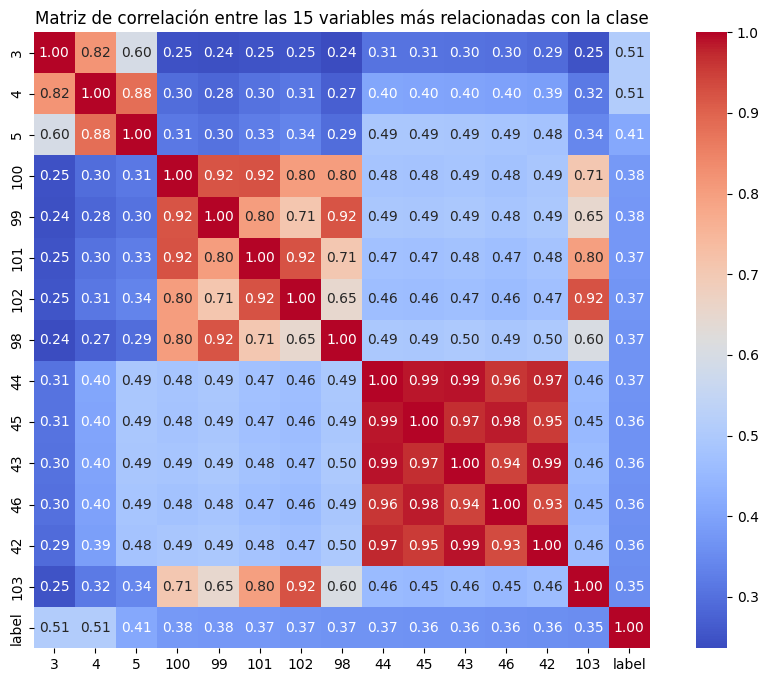
En analiis de correlacion lineal solo entre las variables mas correlacionadas linealmente nos permite inferir lo siguiente: Variables 44, 45, 43, 46, 42 tienen correlaciones muy altas entre sí. Esta informacion nos daria indicio de poder hacer una reducion de la dimensionalidad manteniendo solo una o dos de ellas sin perder mucha información.
df.groupby("label")[3].describe()
| count | mean | std | min | 25% | 50% | 75% | max | |
|---|---|---|---|---|---|---|---|---|
| label | ||||||||
| 0.0 | 90589.0 | 0.177809 | 0.165646 | 0.00000 | 0.0388 | 0.1320 | 0.2820 | 1.000 |
| 1.0 | 2779.0 | 0.091172 | 0.130588 | 0.00000 | 0.0000 | 0.0326 | 0.1280 | 1.000 |
| 2.0 | 7236.0 | 0.419839 | 0.283275 | 0.00000 | 0.1850 | 0.3190 | 0.6700 | 1.000 |
| 3.0 | 803.0 | 0.347040 | 0.191873 | 0.00000 | 0.2280 | 0.3080 | 0.4075 | 1.000 |
| 4.0 | 8039.0 | 0.541981 | 0.163590 | 0.00405 | 0.4270 | 0.5270 | 0.6785 | 0.986 |
# Seleccionar las 5 variables más correlacionadas con 'label'
columns = correlations["label"].sort_values(ascending=False).head(5).index[1:].values
# Mostrar asimetría, curtosis y gráfico violin para cada una
for col in columns:
print('📌 Column:', col)
print(' Skewness:', round(df[col].skew(), 2))
print(' Kurtosis:', round(df[col].kurtosis(), 2))
# Gráfico tipo violin por clase
sns.violinplot(data=df, x="label", y=col, palette="Set2", scale="width")
plt.title(f'Distribución de {col} por clase')
plt.xlabel("Clase")
plt.ylabel("Valor de la señal")
plt.show()
📌 Column: 3
Skewness: 1.08
Kurtosis: 0.71
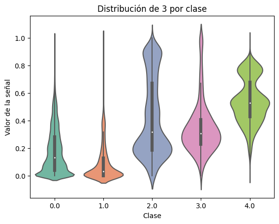
📌 Column: 4
Skewness: 1.58
Kurtosis: 2.49
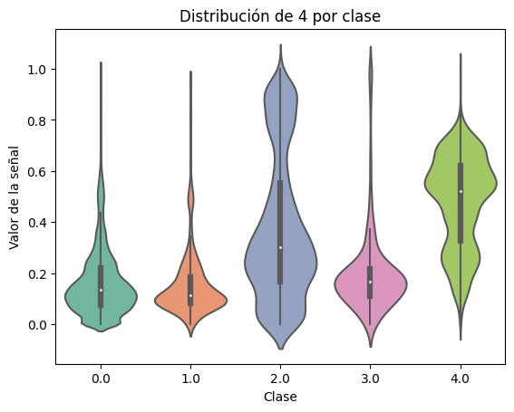
📌 Column: 5
Skewness: 1.39
Kurtosis: 1.85
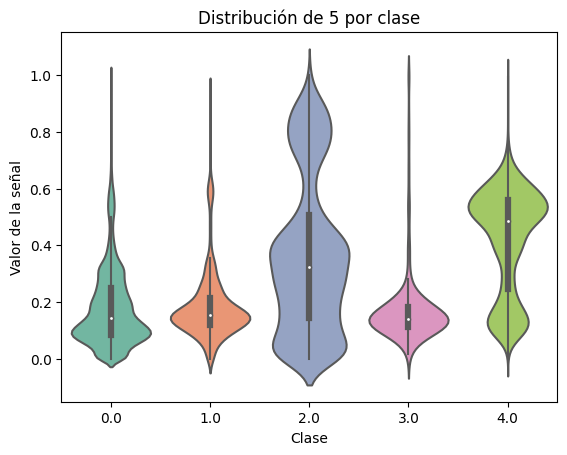
📌 Column: 100
Skewness: 1.42
Kurtosis: 1.37
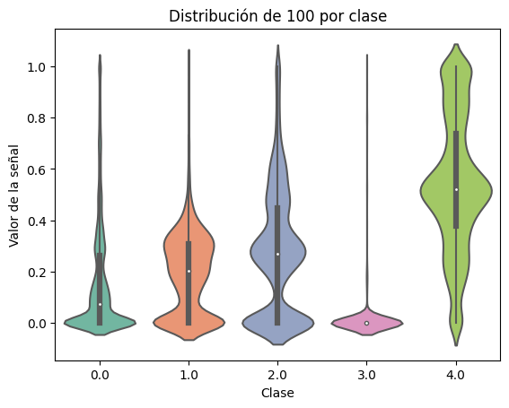
Anteriormente vemos graficamente lo que se visualizo previamente. Despues de este analisis de correlacion podriamos proceder con:
Reducir columnas redundantes- Podria ser con un PCA
Entrenar un modelo simple solo con estas columnas y comparar con el modelo completo.
Visualizar la separación de clases en un espacio 2D con t-SNE o PCA.
Test de Kruskal-Wallis#
El test de Kruskal-Wallis es una prueba estadística no paramétrica que se utiliza para determinar si hay diferencias significativas entre las medianas de dos o más grupos independientes. Es una alternativa al ANOVA cuando no se puede asumir que los datos siguen una distribución normal.
import scipy.stats as stats
classes = df['label'].unique()
col = 3
stat, p_value = stats.kruskal(*(df[df['label'] == c][3] for c in classes))
test_used = "Kruskal-Wallis"
print(f"Test utilizado: {test_used}")
print(f"Estadístico: {stat:.4f}, p-valor: {p_value:.4f}")
if p_value < 0.05:
print("Diferencia estadísticamente significativa entre las clases.")
else:
print("No hay evidencia suficiente para afirmar diferencia estadística entre clases.")
Test utilizado: Kruskal-Wallis
Estadístico: 22411.9930, p-valor: 0.0000
Diferencia estadísticamente significativa entre las clases.
En este caso, probamos si el valor de la clase 3 de la señal es estadísticamente diferente entre las distintas clases El estadístico de Kruskal-Wallis es muy alto, lo que sugiere una diferencia fuerte. Como el p-valor es menor a 0.05, se rechaza la hipótesis nula. Esto significa que existe evidencia estadísticamente significativa de que la variable en la columna 3 toma valores diferentes en al menos una clase.
PCA#
PCA para reducir la dimensionalidad de las señales de ECG, que originalmente tienen 187 variables por señal. Procederemos a proyectar los datos en 3 dimensiones (3 componentes principales)
Reducción de dimensionalidad: pasas de 187 dimensiones a 3 con pérdida controlada de información.
Visualizaremos los datos en 3D (scatter 3D por clase).
Sirve para preprocesamiento de modelos más eficientes y rápidos.
pca3d = PCA(n_components=3)
X_pca3d = pca3d.fit_transform(X)
print(f"Varianza explicada por cada componente: {pca3d.explained_variance_ratio_}")
print(f"Varianza total explicada: {sum(pca3d.explained_variance_ratio_)}")
Varianza explicada por cada componente: [0.43391728 0.10693845 0.07157911]
Varianza total explicada: 0.612434833712368
df_pca = pd.DataFrame(X_pca3d, columns=["PC1", "PC2", "PC3"])
df_pca["label"] = y
fig = px.scatter_3d(df_pca, x="PC1", y="PC2", z="PC3", color=df_pca["label"].astype(str),
title="PCA 3D",
labels={"color": "Tipo de Latido"}, opacity=0.7)
fig.show()
Conclusiones:
PCA está capturando una proporción considerable de la varianza
El primer componente suele tener mayor poder discriminativo
El tercer componente ya explica muy poco
RNN#
import pandas as pd
import numpy as np
from sklearn.model_selection import train_test_split
from tensorflow.keras.models import Sequential
from tensorflow.keras.layers import LSTM, Dense
from tensorflow.keras.utils import to_categorical
from tensorflow.keras.callbacks import EarlyStopping
import matplotlib.pyplot as plt
from tensorflow.keras.layers import LSTM, Dense, Dropout
from tensorflow.keras.optimizers import Adam
from tensorflow.keras.metrics import Recall
from keras_tuner.tuners import RandomSearch
import tensorflow as tf
from keras_tuner import RandomSearch, Objective
# 📥 Cargar datos
ruta = r'C:\Maestria\Tercer_semestre\Machine_learning\mitbih_train.csv'
df = pd.read_csv(ruta, header=None)
df.rename(columns={187: "label"}, inplace=True)
print("Dimensiones del dataset:", df.shape)
Dimensiones del dataset: (109446, 188)
# 🔄 Separar variables y etiquetas
X = df.iloc[:, :-1].values
y = df.iloc[:, -1].values.astype(int)
# 🧹 Preparar datos para LSTM
X = X.reshape((X.shape[0], X.shape[1], 1)) # (samples, timesteps=187, features=1)
y_cat = to_categorical(y, num_classes=5) # One-hot
# 📂 División train/validation
X_train, X_val, y_train, y_val = train_test_split(X, y_cat, test_size=0.2, random_state=42, stratify=y)
# 🧠 Modelo LSTM
model = Sequential([
LSTM(64, input_shape=(X.shape[1], 1)),
Dense(5, activation='softmax')
])
model.compile(optimizer='adam', loss='categorical_crossentropy', metrics=['accuracy'])
# 🛑 EarlyStopping
early_stop = EarlyStopping(monitor='val_loss', patience=3, restore_best_weights=True)
# 🏋️ Entrenar
history = model.fit(
X_train, y_train,
validation_data=(X_val, y_val),
epochs=20,
batch_size=64,
callbacks=[early_stop],
verbose=1
)
# 📊 Gráfica de pérdida y accuracy
plt.figure(figsize=(14, 5))
# Accuracy
plt.subplot(1, 2, 1)
plt.plot(history.history['accuracy'], label='Entrenamiento')
plt.plot(history.history['val_accuracy'], label='Validación')
plt.title('Precisión vs Épocas')
plt.xlabel('Épocas')
plt.ylabel('Precisión')
plt.legend()
# Pérdida
plt.subplot(1, 2, 2)
plt.plot(history.history['loss'], label='Entrenamiento')
plt.plot(history.history['val_loss'], label='Validación')
plt.title('Pérdida vs Épocas')
plt.xlabel('Épocas')
plt.ylabel('Pérdida')
plt.legend()
plt.tight_layout()
plt.show()
Epoch 1/20
1369/1369 [==============================] - 36s 18ms/step - loss: 0.6601 - accuracy: 0.8276 - val_loss: 0.6424 - val_accuracy: 0.8286
Epoch 2/20
1369/1369 [==============================] - 19s 14ms/step - loss: 0.5914 - accuracy: 0.8293 - val_loss: 0.5345 - val_accuracy: 0.8202
Epoch 3/20
1369/1369 [==============================] - 20s 14ms/step - loss: 0.5155 - accuracy: 0.8498 - val_loss: 0.5717 - val_accuracy: 0.8262
Epoch 4/20
1369/1369 [==============================] - 21s 15ms/step - loss: 0.5003 - accuracy: 0.8410 - val_loss: 0.4798 - val_accuracy: 0.8577
Epoch 5/20
1369/1369 [==============================] - 21s 15ms/step - loss: 0.4688 - accuracy: 0.8628 - val_loss: 0.6388 - val_accuracy: 0.8167
Epoch 6/20
1369/1369 [==============================] - 20s 15ms/step - loss: 0.6440 - accuracy: 0.8287 - val_loss: 0.6365 - val_accuracy: 0.8311
Epoch 7/20
1369/1369 [==============================] - 20s 15ms/step - loss: 0.6161 - accuracy: 0.8309 - val_loss: 0.6542 - val_accuracy: 0.8276
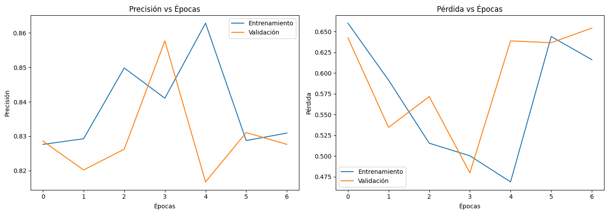
model.summary()
Model: "sequential"
_________________________________________________________________
Layer (type) Output Shape Param #
=================================================================
lstm (LSTM) (None, 64) 16896
dense (Dense) (None, 5) 325
=================================================================
Total params: 17,221
Trainable params: 17,221
Non-trainable params: 0
_________________________________________________________________
#Cargar datos
ruta = r'C:\Maestria\Tercer_semestre\Machine_learning\mitbih_train.csv'
df = pd.read_csv(ruta, header=None)
df.rename(columns={187: "label"}, inplace=True)
# 🔄 Preprocesamiento
X = df.iloc[:, :-1].values.reshape((-1, 187, 1)).astype(np.float32)
y = to_categorical(df.iloc[:, -1].values.astype(int), num_classes=5)
#Dividir en entrenamiento y validación
X_train, X_val, y_train, y_val = train_test_split(X, y, test_size=0.2, stratify=y, random_state=42)
#DEFINICIÓN DEL MODELO PARA KERAS TUNER
def build_model(hp):
model = Sequential()
model.add(LSTM(
units=hp.Int('lstm_units', 32, 128, step=32),
input_shape=(187, 1)
))
model.add(Dropout(hp.Float('dropout', 0.2, 0.5, step=0.1)))
model.add(Dense(
units=hp.Int('dense_units', 32, 128, step=32),
activation='relu'
))
model.add(Dense(5, activation='softmax'))
model.compile(
optimizer=Adam(learning_rate=hp.Choice('lr', [1e-2, 1e-3, 1e-4])),
loss='categorical_crossentropy',
metrics=[Recall(name='recall')]
)
return model
# 🔍 Inicializar tuner con métrica personalizada
tuner = RandomSearch(
build_model,
objective=Objective("val_recall", direction="max"),
max_trials=10,
executions_per_trial=1,
directory='kt_lstm',
project_name='ecg_lstm_recall'
)
early_stop = EarlyStopping(monitor='val_recall', mode='max', patience=3, restore_best_weights=True)
# 🔍 INICIALIZAR KERAS TUNER
tuner = RandomSearch(
build_model,
objective=Objective('val_recall', direction='max'),
max_trials=10,
executions_per_trial=1,
directory='kt_lstm',
project_name='ecg_lstm_recall'
)
# 🚀 TUNING
tuner.search(
X_train, y_train,
validation_data=(X_val, y_val),
epochs=10,
batch_size=64,
callbacks=[early_stop],
verbose=2
)
# 🏆 MEJORES HIPERPARÁMETROS
best_hps = tuner.get_best_hyperparameters(1)[0]
print("\n✅ Mejores hiperparámetros encontrados:")
print(f"LSTM units: {best_hps.get('lstm_units')}")
print(f"Dense units: {best_hps.get('dense_units')}")
print(f"Dropout: {best_hps.get('dropout')}")
print(f"Learning rate: {best_hps.get('lr')}")
Trial 10 Complete [00h 04m 20s]
val_recall: 0.9343535900115967
Best val_recall So Far: 0.9448606371879578
Total elapsed time: 00h 23m 19s
✅ Mejores hiperparámetros encontrados:
LSTM units: 96
Dense units: 96
Dropout: 0.2
Learning rate: 0.01
# 🔁 REENTRENAMIENTO FINAL CON EL MEJOR MODELO
model = Sequential([
LSTM(best_hps.get('lstm_units'), input_shape=(187, 1)),
Dropout(best_hps.get('dropout')),
Dense(best_hps.get('dense_units'), activation='relu'),
Dense(5, activation='softmax')
])
model.compile(
optimizer=Adam(learning_rate=best_hps.get('lr')),
loss='categorical_crossentropy',
metrics=[Recall(name='recall'), 'accuracy']
)
history = model.fit(
X_train, y_train,
validation_data=(X_val, y_val),
epochs=20,
batch_size=64,
callbacks=[early_stop],
verbose=1
)
# 💾 GUARDAR MODELO FINAL
model.save("mejor_lstm_afinado.keras")
# 📊 GRÁFICAS DE ENTRENAMIENTO
plt.figure(figsize=(14, 5))
# Recall
plt.subplot(1, 2, 1)
plt.plot(history.history['recall'], label='Entrenamiento')
plt.plot(history.history['val_recall'], label='Validación')
plt.title('Recall vs Épocas')
plt.xlabel('Épocas')
plt.ylabel('Recall')
plt.legend()
# Pérdida
plt.subplot(1, 2, 2)
plt.plot(history.history['loss'], label='Entrenamiento')
plt.plot(history.history['val_loss'], label='Validación')
plt.title('Pérdida vs Épocas')
plt.xlabel('Épocas')
plt.ylabel('Pérdida')
plt.legend()
plt.tight_layout()
plt.show()
Epoch 1/20
1369/1369 [==============================] - 24s 17ms/step - loss: 0.5778 - recall: 0.8175 - accuracy: 0.8358 - val_loss: 0.4241 - val_recall: 0.8658 - val_accuracy: 0.8714
Epoch 2/20
1369/1369 [==============================] - 23s 17ms/step - loss: 0.4021 - recall: 0.8739 - accuracy: 0.8827 - val_loss: 0.3759 - val_recall: 0.8825 - val_accuracy: 0.8880
Epoch 3/20
1369/1369 [==============================] - 23s 17ms/step - loss: 0.3569 - recall: 0.8902 - accuracy: 0.9005 - val_loss: 0.3303 - val_recall: 0.9077 - val_accuracy: 0.9111
Epoch 4/20
1369/1369 [==============================] - 23s 17ms/step - loss: 0.3232 - recall: 0.9114 - accuracy: 0.9163 - val_loss: 0.2894 - val_recall: 0.9226 - val_accuracy: 0.9245
Epoch 5/20
1369/1369 [==============================] - 23s 17ms/step - loss: 0.2984 - recall: 0.9238 - accuracy: 0.9262 - val_loss: 0.2813 - val_recall: 0.9288 - val_accuracy: 0.9300
Epoch 6/20
1369/1369 [==============================] - 23s 17ms/step - loss: 0.2752 - recall: 0.9292 - accuracy: 0.9313 - val_loss: 0.2719 - val_recall: 0.9168 - val_accuracy: 0.9212
Epoch 7/20
1369/1369 [==============================] - 23s 17ms/step - loss: 0.2637 - recall: 0.9278 - accuracy: 0.9314 - val_loss: 0.2441 - val_recall: 0.9379 - val_accuracy: 0.9399
Epoch 8/20
1369/1369 [==============================] - 22s 16ms/step - loss: 0.3596 - recall: 0.9038 - accuracy: 0.9060 - val_loss: 0.6594 - val_recall: 0.8277 - val_accuracy: 0.8277
Epoch 9/20
1369/1369 [==============================] - 23s 17ms/step - loss: 0.6594 - recall: 0.8277 - accuracy: 0.8277 - val_loss: 0.6568 - val_recall: 0.8277 - val_accuracy: 0.8277
Epoch 10/20
1369/1369 [==============================] - 23s 17ms/step - loss: 0.6516 - recall: 0.8265 - accuracy: 0.8277 - val_loss: 0.6409 - val_recall: 0.8249 - val_accuracy: 0.8280
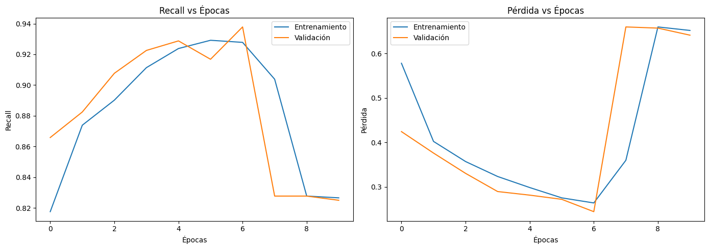
model.summary()
Model: "sequential_4"
_________________________________________________________________
Layer (type) Output Shape Param #
=================================================================
lstm_4 (LSTM) (None, 96) 37632
dropout_4 (Dropout) (None, 96) 0
dense_8 (Dense) (None, 96) 9312
dense_9 (Dense) (None, 5) 485
=================================================================
Total params: 47,429
Trainable params: 47,429
Non-trainable params: 0
_________________________________________________________________
CNN#
# 📦 IMPORTS
import pandas as pd
import numpy as np
from sklearn.model_selection import train_test_split
from tensorflow.keras.models import Sequential
from tensorflow.keras.layers import Conv1D, MaxPooling1D, Dropout, Flatten, Dense
from tensorflow.keras.optimizers import Adam
from tensorflow.keras.utils import to_categorical
from tensorflow.keras.callbacks import EarlyStopping
from tensorflow.keras.metrics import Recall
from keras_tuner import RandomSearch, Objective
import matplotlib.pyplot as plt
# 📥 CARGA Y PREPARACIÓN
ruta = r'C:\Maestria\Tercer_semestre\Machine_learning\mitbih_train.csv'
df = pd.read_csv(ruta, header=None)
df.rename(columns={187: "label"}, inplace=True)
X = df.iloc[:, :-1].values.reshape((-1, 187, 1)).astype(np.float32)
y = to_categorical(df.iloc[:, -1].values.astype(int), num_classes=5)
X_train, X_val, y_train, y_val = train_test_split(X, y, test_size=0.2, stratify=y, random_state=42)
# 🧠 DEFINICIÓN DEL MODELO CNN PARA KERAS TUNER
def build_model(hp):
model = Sequential()
model.add(Conv1D(
filters=hp.Int('filters', 32, 128, step=32),
kernel_size=hp.Choice('kernel_size', [3, 5, 7]),
activation='relu',
input_shape=(187, 1)
))
model.add(MaxPooling1D(pool_size=2))
model.add(Dropout(hp.Float('dropout1', 0.2, 0.5, step=0.1)))
model.add(Conv1D(
filters=hp.Int('filters2', 32, 128, step=32),
kernel_size=hp.Choice('kernel_size2', [3, 5]),
activation='relu'
))
model.add(MaxPooling1D(pool_size=2))
model.add(Dropout(hp.Float('dropout2', 0.2, 0.5, step=0.1)))
model.add(Flatten())
model.add(Dense(
units=hp.Int('dense_units', 32, 128, step=32),
activation='relu'
))
model.add(Dense(5, activation='softmax'))
model.compile(
optimizer=Adam(learning_rate=hp.Choice('lr', [1e-2, 1e-3, 1e-4])),
loss='categorical_crossentropy',
metrics=[Recall(name='recall'), 'accuracy']
)
return model
# 🔍 TUNER CONFIG
tuner = RandomSearch(
build_model,
objective=Objective('val_recall', direction='max'),
max_trials=10,
executions_per_trial=1,
directory='kt_cnn',
project_name='ecg_cnn_recall'
)
early_stop = EarlyStopping(
monitor='val_recall',
mode='max',
patience=3,
restore_best_weights=True,
verbose=1
)
# 🚀 BÚSQUEDA DE HIPERPARÁMETROS
tuner.search(
X_train, y_train,
validation_data=(X_val, y_val),
epochs=10,
batch_size=64,
callbacks=[early_stop],
verbose=2
)
# ✅ MEJORES HIPERPARÁMETROS
best_hps = tuner.get_best_hyperparameters(1)[0]
print("\n✅ Mejores hiperparámetros encontrados:")
print(f"Filters: {best_hps.get('filters')}")
print(f"Kernel size: {best_hps.get('kernel_size')}")
print(f"Dense units: {best_hps.get('dense_units')}")
print(f"Dropout: {best_hps.get('dropout1')}, {best_hps.get('dropout2')}")
print(f"Learning rate: {best_hps.get('lr')}")
Trial 10 Complete [00h 00m 54s]
val_recall: 0.9804019927978516
Best val_recall So Far: 0.9845134615898132
Total elapsed time: 00h 09m 00s
✅ Mejores hiperparámetros encontrados:
Filters: 128
Kernel size: 3
Dense units: 128
Dropout: 0.2, 0.2
Learning rate: 0.001
# 🔁 REENTRENAMIENTO CON MEJOR MODELO
model = build_model(best_hps)
history = model.fit(
X_train, y_train,
validation_data=(X_val, y_val),
epochs=20,
batch_size=64,
callbacks=[early_stop],
verbose=1
)
# 💾 GUARDAR MODELO
model.save("mejor_cnn_afinado.keras")
# 📊 GRAFICAR RECALL Y PÉRDIDA
plt.figure(figsize=(14, 5))
# Recall
plt.subplot(1, 2, 1)
plt.plot(history.history['recall'], label='Entrenamiento')
plt.plot(history.history['val_recall'], label='Validación')
plt.title('Recall vs Épocas')
plt.xlabel('Épocas')
plt.ylabel('Recall')
plt.legend()
# Pérdida
plt.subplot(1, 2, 2)
plt.plot(history.history['loss'], label='Entrenamiento')
plt.plot(history.history['val_loss'], label='Validación')
plt.title('Pérdida vs Épocas')
plt.xlabel('Épocas')
plt.ylabel('Pérdida')
plt.legend()
plt.tight_layout()
plt.show()
Epoch 1/20
1369/1369 [==============================] - 7s 5ms/step - loss: 0.2114 - recall: 0.9346 - accuracy: 0.9410 - val_loss: 0.1305 - val_recall: 0.9608 - val_accuracy: 0.9638
Epoch 2/20
1369/1369 [==============================] - 6s 4ms/step - loss: 0.1151 - recall: 0.9666 - accuracy: 0.9684 - val_loss: 0.0924 - val_recall: 0.9740 - val_accuracy: 0.9754
Epoch 3/20
1369/1369 [==============================] - 6s 4ms/step - loss: 0.0901 - recall: 0.9731 - accuracy: 0.9745 - val_loss: 0.0824 - val_recall: 0.9761 - val_accuracy: 0.9767
Epoch 4/20
1369/1369 [==============================] - 6s 4ms/step - loss: 0.0759 - recall: 0.9766 - accuracy: 0.9777 - val_loss: 0.0746 - val_recall: 0.9780 - val_accuracy: 0.9791
Epoch 5/20
1369/1369 [==============================] - 6s 4ms/step - loss: 0.0644 - recall: 0.9801 - accuracy: 0.9810 - val_loss: 0.0751 - val_recall: 0.9795 - val_accuracy: 0.9800
Epoch 6/20
1369/1369 [==============================] - 6s 4ms/step - loss: 0.0585 - recall: 0.9814 - accuracy: 0.9821 - val_loss: 0.0676 - val_recall: 0.9806 - val_accuracy: 0.9811
Epoch 7/20
1369/1369 [==============================] - 6s 4ms/step - loss: 0.0522 - recall: 0.9837 - accuracy: 0.9843 - val_loss: 0.0654 - val_recall: 0.9813 - val_accuracy: 0.9823
Epoch 8/20
1369/1369 [==============================] - 6s 4ms/step - loss: 0.0478 - recall: 0.9844 - accuracy: 0.9850 - val_loss: 0.0676 - val_recall: 0.9824 - val_accuracy: 0.9830
Epoch 9/20
1369/1369 [==============================] - 6s 4ms/step - loss: 0.0434 - recall: 0.9864 - accuracy: 0.9868 - val_loss: 0.0689 - val_recall: 0.9830 - val_accuracy: 0.9832
Epoch 10/20
1369/1369 [==============================] - 6s 4ms/step - loss: 0.0391 - recall: 0.9871 - accuracy: 0.9875 - val_loss: 0.0666 - val_recall: 0.9836 - val_accuracy: 0.9841
Epoch 11/20
1369/1369 [==============================] - 6s 4ms/step - loss: 0.0349 - recall: 0.9881 - accuracy: 0.9885 - val_loss: 0.0670 - val_recall: 0.9831 - val_accuracy: 0.9838
Epoch 12/20
1369/1369 [==============================] - 6s 4ms/step - loss: 0.0332 - recall: 0.9890 - accuracy: 0.9892 - val_loss: 0.0682 - val_recall: 0.9842 - val_accuracy: 0.9847
Epoch 13/20
1369/1369 [==============================] - 6s 4ms/step - loss: 0.0296 - recall: 0.9898 - accuracy: 0.9901 - val_loss: 0.0754 - val_recall: 0.9834 - val_accuracy: 0.9837
Epoch 14/20
1369/1369 [==============================] - 6s 4ms/step - loss: 0.0279 - recall: 0.9902 - accuracy: 0.9904 - val_loss: 0.0722 - val_recall: 0.9837 - val_accuracy: 0.9841
Epoch 15/20
1369/1369 [==============================] - 6s 4ms/step - loss: 0.0260 - recall: 0.9907 - accuracy: 0.9910 - val_loss: 0.0716 - val_recall: 0.9855 - val_accuracy: 0.9859
Epoch 16/20
1369/1369 [==============================] - 6s 4ms/step - loss: 0.0248 - recall: 0.9913 - accuracy: 0.9915 - val_loss: 0.0747 - val_recall: 0.9825 - val_accuracy: 0.9831
Epoch 17/20
1369/1369 [==============================] - 6s 4ms/step - loss: 0.0228 - recall: 0.9923 - accuracy: 0.9924 - val_loss: 0.0740 - val_recall: 0.9837 - val_accuracy: 0.9842
Epoch 18/20
1356/1369 [============================>.] - ETA: 0s - loss: 0.0226 - recall: 0.9922 - accuracy: 0.9924Restoring model weights from the end of the best epoch: 15.
1369/1369 [==============================] - 6s 4ms/step - loss: 0.0226 - recall: 0.9922 - accuracy: 0.9924 - val_loss: 0.0809 - val_recall: 0.9840 - val_accuracy: 0.9844
Epoch 18: early stopping
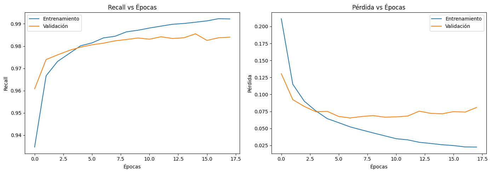
model.summary()
Model: "sequential_1"
_________________________________________________________________
Layer (type) Output Shape Param #
=================================================================
conv1d_2 (Conv1D) (None, 185, 128) 512
max_pooling1d_2 (MaxPooling (None, 92, 128) 0
1D)
dropout_2 (Dropout) (None, 92, 128) 0
conv1d_3 (Conv1D) (None, 88, 128) 82048
max_pooling1d_3 (MaxPooling (None, 44, 128) 0
1D)
dropout_3 (Dropout) (None, 44, 128) 0
flatten_1 (Flatten) (None, 5632) 0
dense_2 (Dense) (None, 128) 721024
dense_3 (Dense) (None, 5) 645
=================================================================
Total params: 804,229
Trainable params: 804,229
Non-trainable params: 0
_________________________________________________________________
AUTOENCODERS#
# 📦 Imports
import pandas as pd
import numpy as np
from sklearn.model_selection import train_test_split
from tensorflow.keras.models import Model, Sequential
from tensorflow.keras.layers import Input, Dense, Dropout, Flatten
from tensorflow.keras.layers import Conv1D, MaxPooling1D, UpSampling1D, Cropping1D
from tensorflow.keras.utils import to_categorical
from tensorflow.keras.optimizers import Adam
from tensorflow.keras.metrics import Recall
from tensorflow.keras.callbacks import EarlyStopping
import matplotlib.pyplot as plt
# 📥 Cargar datos
ruta = r'C:\Maestria\Tercer_semestre\Machine_learning\mitbih_train.csv'
df = pd.read_csv(ruta, header=None)
df.rename(columns={187: "label"}, inplace=True)
X = df.iloc[:, :-1].values.astype(np.float32)
y = to_categorical(df.iloc[:, -1].values.astype(int), num_classes=5)
# ⚙️ Normalizar y reshaping
X = X / np.max(X) # Normalización
X = X.reshape((X.shape[0], X.shape[1], 1)) # Para usar Conv1D
# 📂 Dividir en train/val
X_train, X_val, y_train, y_val = train_test_split(X, y, test_size=0.2, stratify=y, random_state=42)
# 🧠 Construir AUTOENCODER
input_ecg = Input(shape=(187, 1))
# Codificador
x = Conv1D(32, 3, activation='relu', padding='same')(input_ecg)
x = MaxPooling1D(2, padding='same')(x)
x = Conv1D(16, 3, activation='relu', padding='same')(x)
encoded = MaxPooling1D(2, padding='same')(x) # (47, 16)
# Decodificador
x = Conv1D(16, 3, activation='relu', padding='same')(encoded)
x = UpSampling1D(2)(x)
x = Conv1D(32, 3, activation='relu', padding='same')(x)
x = UpSampling1D(2)(x)
x = Conv1D(1, 3, activation='sigmoid', padding='same')(x)
x = Cropping1D(cropping=(0, 1))(x) # 🛠 Solución: Recortar 1 para que quede (187, 1)
decoded = x
# 🔧 Modelo autoencoder
autoencoder = Model(input_ecg, decoded)
autoencoder.compile(optimizer='adam', loss='mse')
autoencoder.summary()
Model: "model"
_________________________________________________________________
Layer (type) Output Shape Param #
=================================================================
input_1 (InputLayer) [(None, 187, 1)] 0
conv1d (Conv1D) (None, 187, 32) 128
max_pooling1d (MaxPooling1D (None, 94, 32) 0
)
conv1d_1 (Conv1D) (None, 94, 16) 1552
max_pooling1d_1 (MaxPooling (None, 47, 16) 0
1D)
conv1d_2 (Conv1D) (None, 47, 16) 784
up_sampling1d (UpSampling1D (None, 94, 16) 0
)
conv1d_3 (Conv1D) (None, 94, 32) 1568
up_sampling1d_1 (UpSampling (None, 188, 32) 0
1D)
conv1d_4 (Conv1D) (None, 188, 1) 97
cropping1d (Cropping1D) (None, 187, 1) 0
=================================================================
Total params: 4,129
Trainable params: 4,129
Non-trainable params: 0
_________________________________________________________________
# 🏋️ Entrenar autoencoder
early_stop = EarlyStopping(monitor='val_loss', patience=3, restore_best_weights=True)
history_ae = autoencoder.fit(
X_train, X_train,
validation_data=(X_val, X_val),
epochs=20,
batch_size=128,
callbacks=[early_stop],
verbose=1
)
Epoch 1/20
685/685 [==============================] - 5s 6ms/step - loss: 0.0076 - val_loss: 7.1532e-04
Epoch 2/20
685/685 [==============================] - 4s 6ms/step - loss: 5.1302e-04 - val_loss: 4.0755e-04
Epoch 3/20
685/685 [==============================] - 4s 6ms/step - loss: 3.5906e-04 - val_loss: 3.2585e-04
Epoch 4/20
685/685 [==============================] - 4s 6ms/step - loss: 2.9088e-04 - val_loss: 2.9254e-04
Epoch 5/20
685/685 [==============================] - 4s 6ms/step - loss: 2.6015e-04 - val_loss: 2.6236e-04
Epoch 6/20
685/685 [==============================] - 4s 6ms/step - loss: 2.3856e-04 - val_loss: 2.2921e-04
Epoch 7/20
685/685 [==============================] - 4s 6ms/step - loss: 2.2186e-04 - val_loss: 2.1290e-04
Epoch 8/20
685/685 [==============================] - 4s 6ms/step - loss: 2.0879e-04 - val_loss: 2.0065e-04
Epoch 9/20
685/685 [==============================] - 4s 6ms/step - loss: 1.9723e-04 - val_loss: 1.9028e-04
Epoch 10/20
685/685 [==============================] - 4s 6ms/step - loss: 1.8603e-04 - val_loss: 1.7818e-04
Epoch 11/20
685/685 [==============================] - 4s 6ms/step - loss: 1.7532e-04 - val_loss: 1.6803e-04
Epoch 12/20
685/685 [==============================] - 4s 6ms/step - loss: 1.6324e-04 - val_loss: 1.5564e-04
Epoch 13/20
685/685 [==============================] - 4s 6ms/step - loss: 1.5394e-04 - val_loss: 1.5207e-04
Epoch 14/20
685/685 [==============================] - 4s 6ms/step - loss: 1.4600e-04 - val_loss: 1.4259e-04
Epoch 15/20
685/685 [==============================] - 4s 6ms/step - loss: 1.3914e-04 - val_loss: 1.3838e-04
Epoch 16/20
685/685 [==============================] - 4s 6ms/step - loss: 1.3358e-04 - val_loss: 1.2898e-04
Epoch 17/20
685/685 [==============================] - 4s 6ms/step - loss: 1.2963e-04 - val_loss: 1.2500e-04
Epoch 18/20
685/685 [==============================] - 4s 6ms/step - loss: 1.2424e-04 - val_loss: 1.4392e-04
Epoch 19/20
685/685 [==============================] - 4s 6ms/step - loss: 1.2056e-04 - val_loss: 1.1683e-04
Epoch 20/20
685/685 [==============================] - 4s 6ms/step - loss: 1.1746e-04 - val_loss: 1.1613e-04
# ✂️ Extraer codificador
encoder = Model(input_ecg, encoded)
# 📥 Extraer representaciones latentes
X_train_encoded = encoder.predict(X_train)
X_val_encoded = encoder.predict(X_val)
# 🔄 Aplanar codificaciones para clasificación
X_train_flat = X_train_encoded.reshape((X_train_encoded.shape[0], -1))
X_val_flat = X_val_encoded.reshape((X_val_encoded.shape[0], -1))
# 🧠 Modelo de clasificación
classifier = Sequential()
classifier.add(Dense(128, activation='relu', input_shape=(X_train_flat.shape[1],)))
classifier.add(Dropout(0.3))
classifier.add(Dense(64, activation='relu'))
classifier.add(Dense(5, activation='softmax'))
classifier.compile(
optimizer=Adam(learning_rate=1e-3),
loss='categorical_crossentropy',
metrics=[Recall(name='recall'), 'accuracy']
)
# 🛑 Early stopping para clasificación
early_stop_cls = EarlyStopping(monitor='val_recall', mode='max', patience=3, restore_best_weights=True)
# 🚀 Entrenamiento del clasificador
history_cls = classifier.fit(
X_train_flat, y_train,
validation_data=(X_val_flat, y_val),
epochs=20,
batch_size=64,
callbacks=[early_stop_cls],
verbose=1
)
classifier.save("clasificador_autoencoder.keras")
# 📊 Gráficas
plt.figure(figsize=(14, 5))
# Recall
plt.subplot(1, 2, 1)
plt.plot(history_cls.history['recall'], label='Entrenamiento')
plt.plot(history_cls.history['val_recall'], label='Validación')
plt.title('Recall vs Épocas')
plt.xlabel('Épocas')
plt.ylabel('Recall')
plt.legend()
# Loss
plt.subplot(1, 2, 2)
plt.plot(history_cls.history['loss'], label='Entrenamiento')
plt.plot(history_cls.history['val_loss'], label='Validación')
plt.title('Pérdida vs Épocas')
plt.xlabel('Épocas')
plt.ylabel('Pérdida')
plt.legend()
plt.tight_layout()
plt.show()
2737/2737 [==============================] - 2s 822us/step
685/685 [==============================] - 1s 893us/step
Epoch 1/20
1369/1369 [==============================] - 4s 3ms/step - loss: 0.3068 - recall: 0.8955 - accuracy: 0.9134 - val_loss: 0.1759 - val_recall: 0.9490 - val_accuracy: 0.9519
Epoch 2/20
1369/1369 [==============================] - 4s 3ms/step - loss: 0.1658 - recall: 0.9503 - accuracy: 0.9544 - val_loss: 0.1326 - val_recall: 0.9629 - val_accuracy: 0.9646
Epoch 3/20
1369/1369 [==============================] - 4s 3ms/step - loss: 0.1387 - recall: 0.9595 - accuracy: 0.9624 - val_loss: 0.1173 - val_recall: 0.9657 - val_accuracy: 0.9676
Epoch 4/20
1369/1369 [==============================] - 4s 3ms/step - loss: 0.1231 - recall: 0.9641 - accuracy: 0.9664 - val_loss: 0.1063 - val_recall: 0.9695 - val_accuracy: 0.9706
Epoch 5/20
1369/1369 [==============================] - 4s 3ms/step - loss: 0.1148 - recall: 0.9666 - accuracy: 0.9687 - val_loss: 0.1029 - val_recall: 0.9697 - val_accuracy: 0.9714
Epoch 6/20
1369/1369 [==============================] - 4s 3ms/step - loss: 0.1074 - recall: 0.9688 - accuracy: 0.9702 - val_loss: 0.0972 - val_recall: 0.9719 - val_accuracy: 0.9732
Epoch 7/20
1369/1369 [==============================] - 4s 3ms/step - loss: 0.1006 - recall: 0.9703 - accuracy: 0.9717 - val_loss: 0.0964 - val_recall: 0.9716 - val_accuracy: 0.9723
Epoch 8/20
1369/1369 [==============================] - 4s 3ms/step - loss: 0.0968 - recall: 0.9715 - accuracy: 0.9730 - val_loss: 0.0878 - val_recall: 0.9744 - val_accuracy: 0.9758
Epoch 9/20
1369/1369 [==============================] - 4s 3ms/step - loss: 0.0921 - recall: 0.9724 - accuracy: 0.9740 - val_loss: 0.0862 - val_recall: 0.9757 - val_accuracy: 0.9766
Epoch 10/20
1369/1369 [==============================] - 4s 3ms/step - loss: 0.0900 - recall: 0.9734 - accuracy: 0.9745 - val_loss: 0.0849 - val_recall: 0.9751 - val_accuracy: 0.9762
Epoch 11/20
1369/1369 [==============================] - 4s 3ms/step - loss: 0.0855 - recall: 0.9743 - accuracy: 0.9756 - val_loss: 0.0930 - val_recall: 0.9735 - val_accuracy: 0.9741
Epoch 12/20
1369/1369 [==============================] - 4s 3ms/step - loss: 0.0826 - recall: 0.9747 - accuracy: 0.9761 - val_loss: 0.0822 - val_recall: 0.9764 - val_accuracy: 0.9771
Epoch 13/20
1369/1369 [==============================] - 4s 3ms/step - loss: 0.0815 - recall: 0.9757 - accuracy: 0.9768 - val_loss: 0.0820 - val_recall: 0.9766 - val_accuracy: 0.9772
Epoch 14/20
1369/1369 [==============================] - 4s 3ms/step - loss: 0.0795 - recall: 0.9759 - accuracy: 0.9771 - val_loss: 0.0783 - val_recall: 0.9787 - val_accuracy: 0.9792
Epoch 15/20
1369/1369 [==============================] - 4s 3ms/step - loss: 0.0776 - recall: 0.9767 - accuracy: 0.9776 - val_loss: 0.0785 - val_recall: 0.9783 - val_accuracy: 0.9791
Epoch 16/20
1369/1369 [==============================] - 4s 3ms/step - loss: 0.0755 - recall: 0.9770 - accuracy: 0.9782 - val_loss: 0.0815 - val_recall: 0.9774 - val_accuracy: 0.9782
Epoch 17/20
1369/1369 [==============================] - 4s 3ms/step - loss: 0.0750 - recall: 0.9771 - accuracy: 0.9781 - val_loss: 0.0802 - val_recall: 0.9780 - val_accuracy: 0.9786
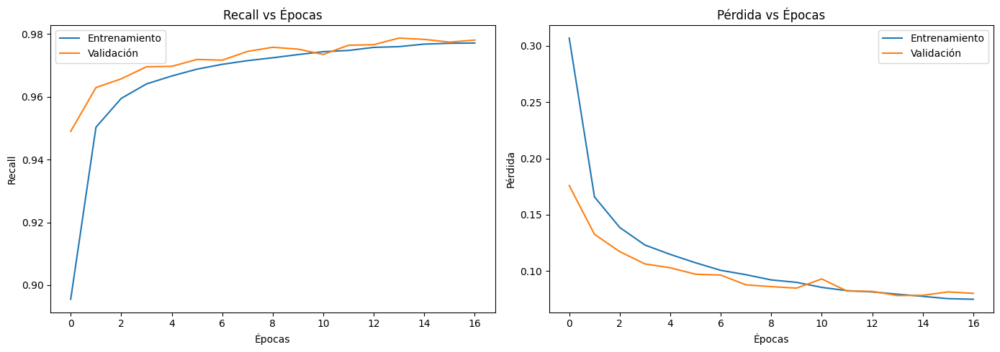
classifier.summary()
autoencoder.summary()
encoder.summary()
Model: "sequential"
_________________________________________________________________
Layer (type) Output Shape Param #
=================================================================
dense (Dense) (None, 128) 96384
dropout (Dropout) (None, 128) 0
dense_1 (Dense) (None, 64) 8256
dense_2 (Dense) (None, 5) 325
=================================================================
Total params: 104,965
Trainable params: 104,965
Non-trainable params: 0
_________________________________________________________________
Model: "model"
_________________________________________________________________
Layer (type) Output Shape Param #
=================================================================
input_1 (InputLayer) [(None, 187, 1)] 0
conv1d (Conv1D) (None, 187, 32) 128
max_pooling1d (MaxPooling1D (None, 94, 32) 0
)
conv1d_1 (Conv1D) (None, 94, 16) 1552
max_pooling1d_1 (MaxPooling (None, 47, 16) 0
1D)
conv1d_2 (Conv1D) (None, 47, 16) 784
up_sampling1d (UpSampling1D (None, 94, 16) 0
)
conv1d_3 (Conv1D) (None, 94, 32) 1568
up_sampling1d_1 (UpSampling (None, 188, 32) 0
1D)
conv1d_4 (Conv1D) (None, 188, 1) 97
cropping1d (Cropping1D) (None, 187, 1) 0
=================================================================
Total params: 4,129
Trainable params: 4,129
Non-trainable params: 0
_________________________________________________________________
Model: "model_1"
_________________________________________________________________
Layer (type) Output Shape Param #
=================================================================
input_1 (InputLayer) [(None, 187, 1)] 0
conv1d (Conv1D) (None, 187, 32) 128
max_pooling1d (MaxPooling1D (None, 94, 32) 0
)
conv1d_1 (Conv1D) (None, 94, 16) 1552
max_pooling1d_1 (MaxPooling (None, 47, 16) 0
1D)
=================================================================
Total params: 1,680
Trainable params: 1,680
Non-trainable params: 0
_________________________________________________________________
Revision en Test de cada modelo#
from tensorflow.keras.models import load_model
ruta_test = r'C:\Maestria\Tercer_semestre\Machine_learning\mitbih_test.csv'
df_test = pd.read_csv(ruta_test, header=None)
df_test.rename(columns={187: "label"}, inplace=True)
# Separar X e y
X_test = df_test.iloc[:, :-1].values.astype(np.float32)
y_test = pd.get_dummies(df_test.iloc[:, -1].values.astype(int)).values # one-hot
# Normalizar y reshape (para LSTM y CNN)
X_test_scaled = X_test / np.max(X_test)
X_test_seq = X_test_scaled.reshape((-1, 187, 1))
Evaluación LSTM#
# Cargar modelo previamente guardado
model_lstm = load_model("mejor_lstm_afinado.keras")
# Evaluar
loss_lstm, recall_lstm, acc_lstm = model_lstm.evaluate(X_test_seq, y_test, verbose=0)
print(f"[LSTM] Recall: {recall_lstm:.4f} - Accuracy: {acc_lstm:.4f} - Loss: {loss_lstm:.4f}")
[LSTM] Recall: 0.9369 - Accuracy: 0.9387 - Loss: 0.2490
Evaluación CNN#
model_cnn = load_model("mejor_cnn_afinado.keras")
# Evaluar
loss_cnn, recall_cnn, acc_cnn = model_cnn.evaluate(X_test_seq, y_test, verbose=0)
print(f"[CNN] Recall: {recall_cnn:.4f} - Accuracy: {acc_cnn:.4f} - Loss: {loss_cnn:.4f}")
[CNN] Recall: 0.9926 - Accuracy: 0.9930 - Loss: 0.0314
Evaluación Autoencoder + Clasificador#
# Obtener codificaciones
X_test_encoded = encoder.predict(X_test_seq)
X_test_flat = X_test_encoded.reshape((X_test_encoded.shape[0], -1))
# Evaluar
loss_ae, recall_ae, acc_ae = classifier.evaluate(X_test_flat, y_test, verbose=0)
print(f"[Autoencoder] Recall: {recall_ae:.4f} - Accuracy: {acc_ae:.4f} - Loss: {loss_ae:.4f}")
685/685 [==============================] - 1s 812us/step
[Autoencoder] Recall: 0.9795 - Accuracy: 0.9804 - Loss: 0.0694